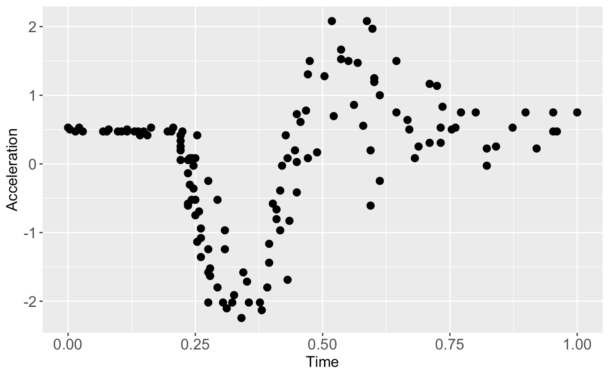

DGP Emulation with the Heteroskedastic Gaussian Likelihood
Source:vignettes/motorcycle.Rmd
motorcycle.RmdThis vignette gives a demonstration of the package on emulating the popular motorcycle dataset (Silverman 1985).
Load packages and data
We start by first loading packages and setting up the required Python environment via init_py()
## Connecting to Python ... done
## Importing required Python modules ... done
## The Python environment for 'dgpsi' is successfully loaded.init_py() provides an automatic Python environment setup and initialization routine and must be run every time after the package is loaded. We now load the training data points,
X <- mcycle$times
Y <- mcycle$accelscale them,
and plot them:
plot(X, Y, pch = 16, cex = 1, xlab = 'Time', ylab = 'Acceleration', cex.axis = 1.3, cex.lab = 1.3)
Before constructing an emulator, we first split a training data set and a testing data set:
Construct and train a DGP emulator
We consider a three-layered DGP emulator with squared exponential kernels:
m_dgp <- dgp(train_X, train_Y, depth = 3, lengthscale = c(0.5, 0.2), likelihood = "Hetero", training = FALSE)## Auto-generating a 3-layered DGP structure ... done
## Initializing the DGP emulator ... doneWe choose a heteroskedastic Gaussian likelihood by setting likelihood = "Hetero" since the data drawn in the plot show varying noises. lengthscale is set to c(0.5, 0.2) where 0.5 is the initial lengthscale value for kernel functions of all GP nodes in the first layer and 0.2 is the initial lengthscale value for kernel functions of all GP nodes in the second layer. We set training = FALSE so dgp() only constructs a DGP structure and we can use summary() to check if our specifications for the DGP emulator is correct before proceeding to training:
summary(m_dgp)## +-----------+----------+---------------------+-----------------+---------------+-------------------+------------+-------------------+
## | Layer No. | Node No. | Type | Length-scale(s) | Variance | Nugget | Input Dims | Global Connection |
## +-----------+----------+---------------------+-----------------+---------------+-------------------+------------+-------------------+
## | Layer 1 | Node 1 | GP (Squared-Exp) | [0.500] | 1.000 (fixed) | 1.000e-06 (fixed) | [1] | No |
## | Layer 2 | Node 1 | GP (Squared-Exp) | [0.200] | 1.000 | 1.000e-06 (fixed) | [1] | [1] |
## | Layer 2 | Node 2 | GP (Squared-Exp) | [0.200] | 1.000 | 1.000e-06 (fixed) | [1] | [1] |
## | Layer 3 | Node 1 | Likelihood (Hetero) | NA | NA | NA | [1, 2] | NA |
## +-----------+----------+---------------------+-----------------+---------------+-------------------+------------+-------------------+
## 1. 'Input Dims' presents the indices of GP nodes in the feeding layer whose outputs feed into the GP node referred by 'Layer No.' and 'Node No.'.
## 2. 'Global Connection' indicates the dimensions (i.e., column indices) of the global input data that are used as additional input dimensions to the GP node referred by 'Layer No.' and 'Node No.'.For a DGP emulator, we can use continue() to invoke the training for the constructed m_dgp instead of re-building everything from scratch by re-running dgp():
m_dgp <- continue(m_dgp)## Continue the training:
## Iteration 500: Layer 3: 100%|██████████| 500/500 [00:18<00:00, 27.49it/s]For comparison, we also build a GP emulator (by gp()) that incorporates homogeneous noises by setting nugget_est = T and the initial nugget value to \(0.01\). We set training to FALSE so we can use summary() to check the generated GP structure before training:
## Auto-generating a GP structure ... done
## Initializing the GP emulator ... done
## +-------------+-----------------+----------+--------+------------+
## | Kernel Fun | Length-scale(s) | Variance | Nugget | Input Dims |
## +-------------+-----------------+----------+--------+------------+
## | Squared-Exp | [0.200] | 1.000 | 0.010 | [1] |
## +-------------+-----------------+----------+--------+------------+
## 'Input Dims' indicates the dimensions (i.e., column indices) of your input data that are used for GP emulator training.We now train the GP emulator by re-running the above function with training = TRUE, which is the default setting:
m_gp <- gp(train_X, train_Y, nugget_est = T, nugget = 1e-2)## Auto-generating a GP structure ... done
## Initializing the GP emulator ... done
## Training the GP emulator ... doneBefore we validate the constructed emulators, we can summarize the trained DGP emulator:
summary(m_dgp)## +-----------+----------+---------------------+-----------------+---------------+-------------------+------------+-------------------+
## | Layer No. | Node No. | Type | Length-scale(s) | Variance | Nugget | Input Dims | Global Connection |
## +-----------+----------+---------------------+-----------------+---------------+-------------------+------------+-------------------+
## | Layer 1 | Node 1 | GP (Squared-Exp) | [0.683] | 1.000 (fixed) | 1.000e-06 (fixed) | [1] | No |
## | Layer 2 | Node 1 | GP (Squared-Exp) | [0.905] | 0.833 | 1.000e-06 (fixed) | [1] | [1] |
## | Layer 2 | Node 2 | GP (Squared-Exp) | [1.962] | 26.665 | 1.000e-06 (fixed) | [1] | [1] |
## | Layer 3 | Node 1 | Likelihood (Hetero) | NA | NA | NA | [1, 2] | NA |
## +-----------+----------+---------------------+-----------------+---------------+-------------------+------------+-------------------+
## 1. 'Input Dims' presents the indices of GP nodes in the feeding layer whose outputs feed into the GP node referred by 'Layer No.' and 'Node No.'.
## 2. 'Global Connection' indicates the dimensions (i.e., column indices) of the global input data that are used as additional input dimensions to the GP node referred by 'Layer No.' and 'Node No.'.and GP emulator:
summary(m_gp)## +-------------+-----------------+----------+--------+------------+
## | Kernel Fun | Length-scale(s) | Variance | Nugget | Input Dims |
## +-------------+-----------------+----------+--------+------------+
## | Squared-Exp | [0.127] | 0.728 | 0.321 | [1] |
## +-------------+-----------------+----------+--------+------------+
## 'Input Dims' indicates the dimensions (i.e., column indices) of your input data that are used for GP emulator training.Validation
We are now ready to validate both emulators via validate() at 20 out-of-sample testing positions generated earlier:
m_dgp <- validate(m_dgp, test_x, test_y)## Initializing the OOS ... done
## Calculating the OOS ... done
## Saving results to the slot 'oos' in the dgp object ... done
m_gp <- validate(m_gp, test_x, test_y)## Initializing the OOS ... done
## Calculating the OOS ... done
## Saving results to the slot 'oos' in the gp object ... doneNote that using [validate()] before plotting can saving computations involved in [plot()] because [validate()] stores validation results in the emulator objects. Finally, we plot the OOS validations for the GP emulator:
plot(m_gp, test_x, test_y)## Initializing ... done
## Post-processing OOS results ... done
## Plotting ... done
and for the DGP emulator:
plot(m_dgp, test_x, test_y)## Initializing ... done
## Post-processing OOS results ... done
## Plotting ... done
Note that we still need to provide test_x and test_y to [plot()] even they have already been provided to [validate()]. Otherwise, [plot()] will draw the LOO cross validation plot. The visualizations above show that the DGP emulator gives a better performance than the GP emulator on modeling the heteroskedastic noises embedded in the underlying data set, even though they have quite similar NRMSEs.